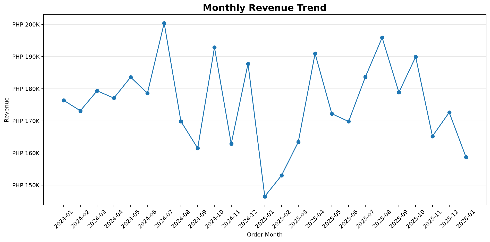
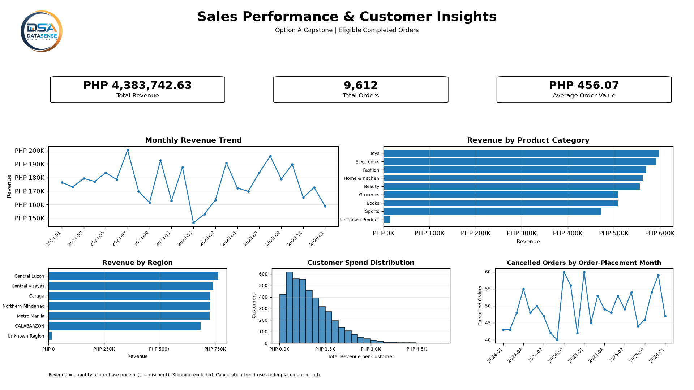
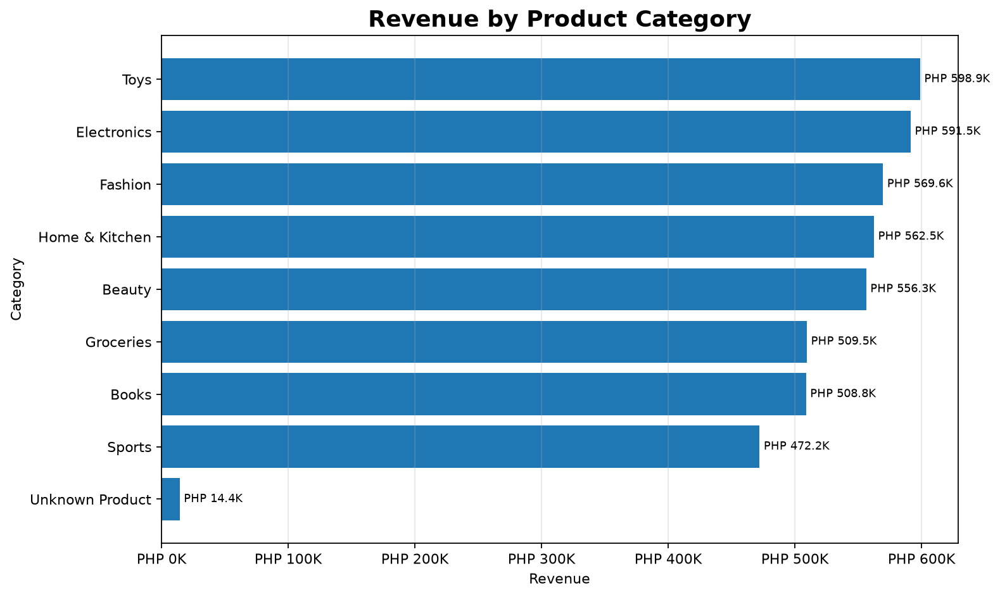
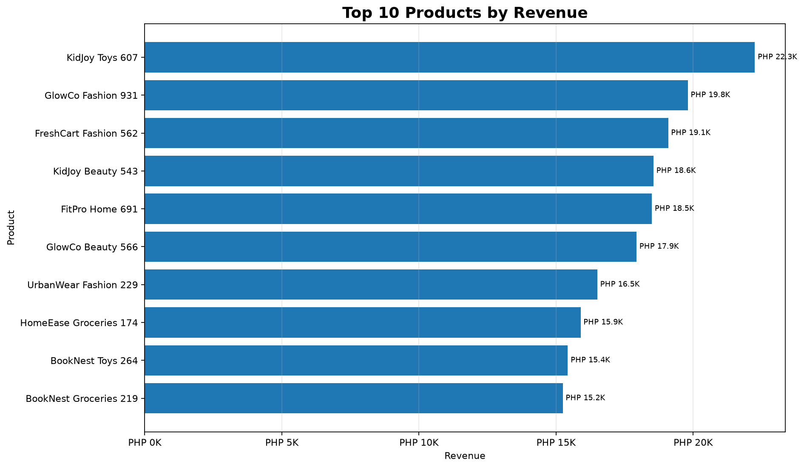
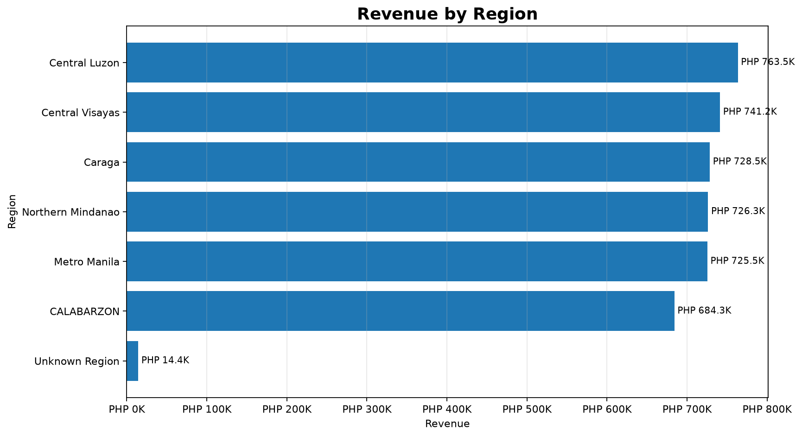
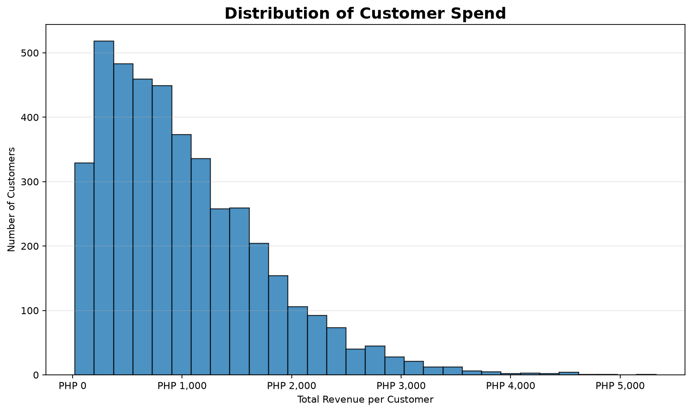
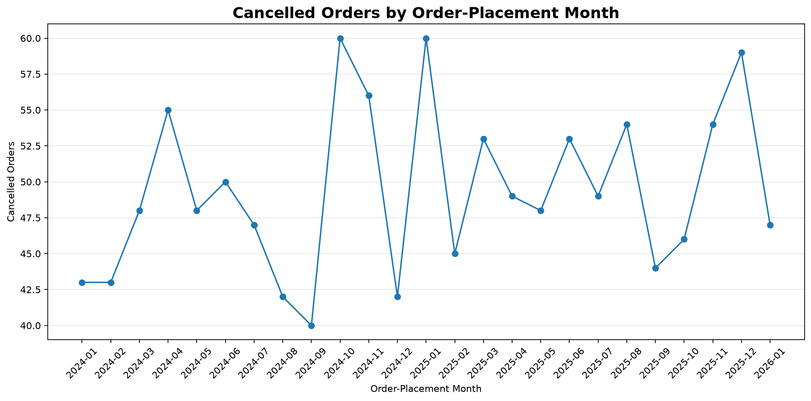

01 / Revenue
Monthly Revenue Trend
Monthly sales fluctuate; July 2024 records the highest value at about PHP 200.4K.
S.O.M.S. / PYTHON CAPSTONE CASE STUDY
An end-to-end Python and Jupyter analysis of synthetic retail transaction data, from cleaning seven source files to a validated sales fact table, customer segmentation, and executive-ready visuals.
How is the store performing, and what drives revenue? I used Python to turn a seven-file training dataset into a consistent view of sales, product contribution, geography, customer purchasing patterns, and cancellations.
Final Python dashboard built from the validated sales and cancellation analysis.

Click to enlargeDashboard image: 1920 × 1080 pixels (16:9). KPIs use eligible Completed orders; cancellation figures use all cleaned orders.
The capstone uses a synthetic retail/e-commerce dataset with deliberate quality issues. The assignment asked for an analyst-style explanation of store performance and revenue drivers, supported by a reproducible notebook and documented cleaning decisions.
Seven source tables were loaded. The figures below are row counts after exact duplicate removal, not the number of customers or sales orders used in the final KPI population.
| Source file | Cleaned rows | Role in analysis |
|---|---|---|
customers.csv | 5,000 | Customer profiles and geography |
products.csv | 800 | Product information and standardized categories |
orders.csv | 15,000 | Status, date, customer and discount |
order_items.csv | 37,501 | Product quantity and purchase-time price |
payments.csv | 15,000 | Reviewed during cleaning; not used as merchandise revenue |
shipments.csv | 15,000 | Reviewed during data preparation |
returns.csv | 1,200 | Reviewed during preparation; cancellation was chosen as the trend |
Data dictionary describes these records as synthetic training data. The 25-month analysis window spans January 2024 through January 2026.
The raw files intentionally contained category variations, nulls, duplicates, mixed dates, currency strings, and orphan references. Each major change was checked, and unresolved issues were retained or flagged rather than silently replaced.
Removed 387 exact duplicate rows. Primary keys were then checked for missing or repeated IDs.
Consolidated 18 product category labels into eight categories; converted mixed dates and numeric/currency fields.
Used documented rules for missing discounts and labels; preserved unresolved fields as missing where no defensible value existed.
Flagged 43 orders with an unmatched customer ID and 129 items with an unmatched product ID.
Recovered 2,227 of 2,236 missing purchase prices from the product master; nine remained unresolved.
Flagged 378 orders with item-quality issues. Of these, 238 Completed orders were excluded from merchandise KPIs.
Fact table grain: one row per order_item_id. Left joins to orders, products, and customers preserved all 37,501 cleaned item rows. Many-to-one validation ensured that the joins did not multiply line items.
Completed, excluding any Completed order with an unusable item quantity or unresolved purchase price.The final merchandise revenue was reconciled from the item level to the order level; month, product, category, region, and city revenue breakdowns also reconcile to the same total.
Six exported PNG charts. Use the filters or open any chart for a closer look.

Monthly sales fluctuate; July 2024 records the highest value at about PHP 200.4K.

Toys leads at PHP 598.9K, followed closely by Electronics at PHP 591.5K.

KidJoy Toys 607 generated the most product revenue at PHP 22.3K.

Central Luzon contributes PHP 763.5K, about 17.4% of eligible sales revenue.

The distribution is right-skewed; fewer matched customers reach higher spending levels.

October 2024 and January 2025 are tied at 60 cancelled orders each.
Revenue is uneven over time. July 2024 peaked at PHP 200.4K; January 2025 was the lowest at PHP 146.5K.
No one category dominates. Toys contributed about 13.66% and Electronics 13.49% of total revenue.
Geographic contribution is distributed. Central Luzon led at 17.42%, with several other regions close behind.
Repeat customers generate most matched-customer revenue. Their contribution was about 85.4%.
Customer spend is right-skewed. Most matched customers fall in lower spending ranges.
Cancellations warrant review. The overall rate was 8.23%, reaching 10.77% for the January 2025 order cohort.
These are descriptive observations. The dataset does not establish why the changes happened; potential causes would need separate investigation.
The project turned seven inconsistent CSV datasets into a validated item-level analysis model and a defined population of Completed sales orders. Revenue totals reconcile across multiple business breakdowns, making the KPI results and visuals internally consistent.
Revenue is spread across product categories and regions, while repeat customers account for most sales among matched customers. Monthly revenue and cancellation counts both fluctuate, and the analysis points to questions worth investigating further—not to proven causal explanations.
Maintain a focus on repeat buyers, then test appropriate follow-up or cross-sell efforts for customers with only one observed eligible order. Measure subsequent order frequency and incremental revenue before scaling.
Review the January 2025 and other elevated cancellation cohorts. Check fulfillment, product availability, customer requests, and order handling with operational data before deciding on a preventive action.
This case study includes the notebook, the two specifically requested cleaned datasets, exported chart PNGs, and concise written summaries. All data files were taken from the synthetic training project.
The six standalone chart images are available in the Visual Analysis gallery. The full synthetic raw dataset is included in the repository's Data/Raw folder so the notebook can be rerun. The separately required capstone submission PDF is not part of this web case study.